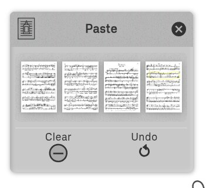

Open in new window for convenient side-by-side reading with Podium. | Print me
Podium is:
...that runs on:
...with input devices:
...and practice tools:
...url:
https://studiop5.org/podium
Welcome to Podium! This Quick Start guide will get you up and running in minutes. For detailed information on any topic, follow the chapter references throughout.
Launch Podium at https://studiop5.org/podium. You'll see a circular menu on a gray background. Tap the inner ring's "Score" cell, then tap the outer ring's "Open" cell. Drag out from the Open cell to reveal the Open Panel. Select a storage location (Local, Google Drive, Dropbox, OneDrive, or Recent) and tap a PDF score file to open it.

See Chapter 2: Score Ring for complete file management details
Once your score is open, tap the inner ring's "Layout" cell. The outer ring will show 4 layout options:
Tap any layout to activate it. Use two-finger pinch-zoom on the score to resize and reposition.


See Chapter 3: Layout Ring for detailed layout controls and settings
Navigation: Swipe or fling pages to turn them. Long-press anywhere on the background to summon the menu. To hide the menu, long-press the menu's center grip to collapse and park it in the upper left corner, or fling it to any corner or edge. Swipe left ⇄ right on the background to enter full-screen mode.
Annotations: Tap the inner ring's "Ink" cell to add annotations. The outer ring shows tools for:
Activate any tool, then tap or drag on the score to use it. Note: Most Ink tools automatically deactivate after a few seconds of inactivity, so you won't accidentally stay in annotation mode when navigating.

See Chapter 4: Ink Ring for complete annotation tools and techniques
The menu has three parts:
Both rings can be rotated by dragging them in a circular motion.

See Chapter 1: Interface Basics for complete interface details
Cells with small diamond-shaped pointers (like compass points) contain hidden panels. Drag out from these cells to reveal the panel. Move panels by dragging their textured header. Hide a panel by flinging it from the header, or close it with the X button.
Everything in Podium—menu, panels, layouts—is resizable and movable using two-finger gestures (or Ctrl+mouse for desktop). See Chapter 1: Interface Basics for details.
Tap the inner ring's "Score" cell, then tap "Save" in the outer ring (or drag out from Save to choose a new location/name). Your annotations and settings are saved within the PDF file.

See Chapter 2: Score Ring for saving, printing, and score details
Need to add, remove, or rearrange pages? Tap the inner ring's "Page" cell. The outer ring provides:
Note: Like Ink tools, Page tools auto-deactivate after a few seconds of inactivity.
The page paste buffer is shared across all Podium tabs and windows, and persists across sessions. This lets you copy pages from one score and paste them into another, making it easy to assemble custom practice scores.

See Chapter 5: Page Ring for complete page management features
Tap the inner ring's "More" cell to access a suite of musician's practice tools. Most of these panels can be detached from their headers and positioned anywhere on screen for convenient access while practicing:

See Chapter 7: More Ring for detailed information on each practice tool
Podium works with footpedal page turners! Configure arrow key behavior in the Page Ring's Numbers panel to map pedal presses to page turns or bookmark navigation.
See Chapter 5: Page Ring - Numbers for keyboard shortcut configuration
Tap the inner ring's "App" cell, then tap "Guide" in the outer ring to access this document.
That's it! You're ready to use Podium. Explore the chapters below for in-depth information on each feature.
↑ Back to Table of ContentsThe simplest way to use Podium is to launch it directly from the URL—no installation required. Just open studiop5.org/podium.html in your browser and start using it immediately.
However, installation may be desirable in certain situations, especially when using Podium in performance where internet connectivity cannot be assumed.
Podium can be installed as a browser extension in supported desktop browsers (Chrome, Edge, and other Chromium-based browsers). Once installed, the extension adds a "Podium" option to the browser's context menu, allowing you to open PDF files directly in Podium. The extension works offline, making it ideal for performance situations.
The extension provides direct integration with online score libraries, including Musopen and IMSLP. IMSLP integration is available to IMSLP members only—please support this invaluable resource for musicians by becoming a member. Musopen works without a subscription, but consider supporting their mission to provide free music resources.

Podium can also be installed as a Progressive Web App. Once installed, Podium appears as a standalone application on your device and works offline.
Desktop (Chrome, Edge, etc.): When visiting the Podium URL, look for the Podium icon and "Open in app" prompt in the address bar. Click to install.

Android (Chrome): Chrome may display an install banner at the bottom of the screen. If not, tap the browser menu (three dots) and select "Add to Home Screen" or "Install App".
iOS/iPadOS (Safari only): Apple does not display install prompts for PWAs. Instead, open Podium in Safari, tap the Share button (square with arrow), then tap "Add to Home Screen". Note: Chrome and other browsers on iOS cannot install PWAs due to Apple's restrictions.
| Windows | macOS | Linux | ChromeOS | Android | iOS/iPadOS | |
|---|---|---|---|---|---|---|
| Browser Extension | ✓ | ✓ | ✓ | ✓ | Edge only* | — |
| PWA Install | ✓ | ✓ | ✓ | ✓ | ✓ | Safari only |
| Direct URL | ✓ | ✓ | ✓ | ✓ | ✓ | ✓ |
| Offline Use | ✓ | ✓ | ✓ | ✓ | ✓ | ✓ |
| Local File Save | ✓ | ✓ | ✓** | ✓ | ✓ | ✓ |
| Cloud Storage | ✓ | ✓ | ✓ | ✓ | ✓ | ✓ |
* Edge for Android has extension support in beta as of this writing.
** Firefox on any desktop platform saves to your Downloads folder by default. See Recommended Firefox Desktop Settings to configure this, or use a Chromium-based browser or Safari to choose file name and location.
Podium has four interface elements:
Everything in Podium—menu, panels, layouts—is resizable and movable.
Sand texture: Notice the sand-like texture on the menu's center grip, panel headers, and sliders. Drag any textured area to move that element.
Two-finger pinch gestures: Use pinch-zoom to resize any element. The behavior depends on where your fingers are:
Mouse alternative: Hold Ctrl and drag to move. Hold Ctrl and scroll the mouse wheel to resize. For greater accuracy, hold Ctrl+Shift while scrolling.
On launch, Podium displays a circular menu on a gray background. The menu has three parts:
Tap any cell to activate it. This determines which cells appear in the outer ring. Only one inner ring cell can be active at a time. Active cells have a white background.
Tap any cell to activate it and trigger its action. Only one outer ring cell can be active at a time.
Unavailable cells are grayed out. On launch, only the Score and More cells (inner ring) and Open and New cells (outer ring) are available.
Cells in the Ink Ring and Page Ring automatically deactivate after 4 seconds of inactivity, returning control to normal page navigation. This is an important safety feature: when an Ink or Page cell is active, touch gestures on score pages are intercepted by that cell's action rather than being interpreted as page navigation. Auto-deactivation ensures you won't accidentally draw on a page or delete it when you intended to simply turn the page.
To prevent a cell from auto-deactivating, long-press it. A locked cell displays a circle around its outer edge and remains active indefinitely. Long-press the cell again, or select a different cell, to unlock it. Cell locking is supported by all Ink Ring cells and most Page Ring cells (except Numbers and Merge).

Drag either ring in a circular motion to rotate it. This is helpful when the menu is positioned near a screen edge and some cells aren't visible. Rotating the ring brings hidden cells into view without having to move the menu.

Menu cells with small diamond-shaped pointers contain hidden panels. To open a panel, drag from its cell in any radial direction (inward or outward). As long as the drag motion isn't circular, the panel will be revealed—circular motion rotates the ring instead. Revealing a panel does not automatically activate the corresponding cell—these are completely separate operations.
Moving panels: Drag from the textured header, or use pinch-zoom anywhere on the panel.
Closing vs. hiding:
Many panels use sliders to adjust values. For more precision, drag the slider to approximately the right value, then (without lifting your finger) drag up or down. The farther you drag, the more precise the slider becomes.
A floating window displays the current value, positioned so your hand won't block it.

Manage scores stored as PDF files.
Most of the Score Ring's cells are grayed out until a score is Opened, or until a New, empty score is created.

Open and save PDF score files.
Both Open and Save Panels work with locally attached storage or with cloud storage services: Google Drive, Dropbox, or Microsoft OneDrive. Though these services require accounts, they all offer free subscription tiers.
In either Panel, tap any tab on the tab strip to select a storage service. Drag the strip left ⇄ right to access other tabs.
Each Panel displays a scrolling list of PDF file and folder entries. Drag or fling that list up/down to scroll the contents. The list is alphabetical A-Z, with directories grouped after files.
Tap a folder entry to repopulate the list with that folder's contents. Below the tab strip is the Folder Path strip: it shows the current folder path. Tap a folder name or icon to load the corresponding folder. Tap New to create a new folder.
Each entry in the file/folder list has icons for renaming or deleting. There is no built-in copy/paste functionality: instead, open the file, save it to the desired location, then delete the original.
Tap a PDF score file in the Open Panel to download and display that score.

The Menu's Open cell is also tappable. With a score already open, tapping the Open cell reloads the current file (i.e. "revert to saved").
Recent Tab: The Recent tab provides quick access to the 20 last visited PDF score files. This list is stored in the browser's local storage, so it will have unique contents for each device/browser combination.
Drag and Drop (Desktop): On desktop browsers, you can drag a PDF file directly from your file manager onto the Local tab to open it in Podium.
Password-Protected PDFs: Podium can open password-protected PDF files. You will be prompted to enter the password. Once opened, you can view and annotate the score, but you cannot save changes or copy pages from a protected PDF.
The Save Panel has a widget for editing the file name. Inside the widget there is an Upload button: tap it to save the current score, with the given name, to the selected folder.

The Menu's Save cell is also tappable. With a score open, tapping the Save cell saves the current file to its original location, bypassing the Save Panel.
Firefox does not support the File System Access API, so local saving works differently:
For the best experience with Podium on Firefox desktop, configure these settings (found in Firefox Settings → General):
On platforms that don't allow specifying the file name during save, edit the score name first in the Details Panel (Score Ring → Details). The .pdf extension is not required—it's added automatically on save if not present.
Create new, empty scores.
New empty scores are created by activating the New cell. The newly created score is made using the number of pages, size, and background color and opacity specified in the New Panel.

The New Panel allows you to configure:
Print the current score with or without annotations.

In Podium, user-created annotations are called Ink. The Print Panel allows you to configure printing options:
The Details Panel displays comprehensive information about the currently open score.

Score Name: At the top of the panel is an editable field showing the score's file name. Edit this field to rename the score before saving. The .pdf extension is not required—it's added automatically on save if not present. This is especially useful on platforms where you cannot specify a file name during save (such as Firefox or Android).
Metadata: The panel displays metadata created by Podium (such as when the score was last modified) as well as any metadata from the original PDF file. This may include information about the score's provenance, such as the original author, creation date, and other document properties.
Page Sizing: In Podium, all pages in a score are displayed at the same size, though this is not necessarily the case for PDF files in general. A single PDF file can contain pages of many different sizes—for example, a score might mix Letter and A4 pages, or include wide foldout pages alongside standard portrait pages. This is common with scanned scores from libraries like IMSLP, where pages may have been scanned at different times or from different editions. By default, Podium sizes pages to match the largest page in the PDF and centers smaller pages within that rectangle. The Details Panel contains a radio button that determines how smaller pages are treated:
Display Quality: The panel allows you to configure display quality. Higher quality uses more memory but provides sharper rendering.
↑ Back to Table of ContentsDetermine how scores are displayed.

Podium implements 4 layout schemes:
By default, scores open with the last used layout on the current browser/platform or, if none, Book. The layout can be changed any time by tapping the desired cell. Whenever a score is saved, its last layout is stored as metadata in the PDF file, as well as in browser local storage.
Simulate a physical book.

Turn pages by flinging (i.e. touch→drag→release, all in one quick motion), or by more deliberate dragging. When dragging, if you release without dragging past the central spine, the dragged page will flop back to its original position.
The Book Panel's Fit buttons determine the score's initial sizing:
After initial layout, use 2 fingers to pinch-zoom the score to move/resize as desired.
Page numbers can be turned on or off in the Book Panel. Current page numbers are shown at the left and right sides of the layout: drag the page number to quickly flip to other pages.
Bookmarks: Long-press on a page number to set a bookmark. Bookmarks appear as colored tabs on the book jacket. Press on any bookmark to jump there. Long-press on any bookmark to remove it.
Display the score as a continuous, horizontally-scrollable flow of pages.

The Horizontal Panel's Fit buttons determine the layout's initial size:
After initial layout, pinch-zoom the score to resize/move as desired.
The Panel's Show: slider determines how many pages are visible at a time (from 1-8)
The Panel's Gap slider determines how much space to leave around each page, as a percentage of the page's width.
Scroll pages by dragging or flinging. The Panel's Snap: slider determines how many pages the scroll advances when a page is dragged or flung, ensuring that after a scroll, the leftmost and rightmost pages align with the left and right scrollers. Move the Snap: slider all the way to the left to completely disable page snapping.
Page numbers can be turned on or off in the Panel. Current page numbers are shown at the left and right sides of the layout: drag the page number to quickly scroll to other pages.
Bookmarks: Work the same as in Book layout (see above).
Display the score as a continuous, vertically-scrollable flow of pages.

Settings for this layout function identically to the Horizontal Layout, see previous section.

Display all pages of the score in a single table.
Convenient for adding or rearranging pages (using the Page Ring), or for quickly locating a page in a large score.

The Table Panel's Fit buttons determine the layout's initial size:
After initial layout, pinch-zoom the score to resize/move as desired.
The Panel's Pages per row: slider determines how many pages are shown in each row.
The Panel's Horizontal Gap slider determines the horizontal gap between neighbouring pages, as a percentage of the page's width. Setting this to a negative value causes the pages to be displayed overlapping each other, much like playing cards.
The Panel's Vertical Gap slider determines the vertical gap between neighbouring pages, as a percentage of the page's height. Setting this to a negative value causes the pages to be displayed overlapping each other, much like playing cards.
Page numbers can be turned on or off in the Panel.
Current Page: At any time, there is always a current page, drawn in higher resolution, slightly larger, and on top of all other pages. Click on any page to make it current. If you change to another layout, that layout will open at the current page.
Bookmarks: Long-press on a page to both make it current and toggle its bookmark state (add bookmark if none exists, remove bookmark if one already exists).
Reordering pages: Touch-drag a page to a new location. As you drag the page across the layout, other pages will split apart showing you where the page will be inserted if you release the drag. This effect works best when pages are not too extensively overlapped using negative values for the Vertical and Horizontal Gap sliders in the Layout Panel.
Deleting pages: Dragging pages out of the layout deletes them from the score. This can also be accomplished using the Delete cell of the menu's Page Ring.
Add annotations to a score.

The Ink Ring's cells add annotation objects—staves, music symbols, text boxes, external images, and line drawings—to score pages. Tap any cell to activate it, then touch any score page to start drawing, to insert a symbol, image, or text box, or to perform any of the Ring's other actions: cut, copy, paste, grid, or edit.
Pencil, Pen: line drawing tools. They are functionally identical; however, using their associated panels, they can be configured differently (color, line width, etc.) so that two different line types are immediately available for use.
Rastrum: A tool for drawing staves. More generally, a tool that draws a settable number of parallel lines, either horizontally or vertically. Consequently, the tool can also be used for medieval/renaissance staves, lute and guitar tablatures, chord diagrams, and so on.
Text: adds editable, multi-line text boxes to a page.
Symbols: adds individual music symbols. The Symbol cell's panel provides access to the several thousand music glyphs contained in the included Bravura music font.
Undo: Undo the last Ink Ring action. To undo an action, activate the undo cell, then tap the page to revert it to its state before the last action. To conserve memory, only the most recent 10 actions per page can be undone.
Grid: Displays a configurable drawing grid over the page.
Cut, Copy, Paste: Each annotation is an independent object that can be cut, copied, pasted, or transformed. To cut or copy an object, tap the Cut or Copy cell, then tap the target object on the score page. Then, if desired, tap the Paste cell, then tap the score page where you want to paste the previously Cut/Copied object.
Edit: while active, tapping on any existing annotation allows it to be selected, moved, rotated, or resized. Drag out to reveal a panel with precision sliders for exact positioning.
Draw lines on score pages.

The Pen and Pencil Tools have identical functionality. Configure them independently: that way, two unique line-drawing styles will be readily available.
Tap on the color swatch in the Panel to invoke the Browser's native color chooser.
Tap on the interlocking circles in the Panel to reveal a slider that adjusts opacity.
Buttons on the bottom affect how the lines are drawn:
Draw music staves.

The tool's name comes from the Latin word for "rake." Historically, a rastrum (plural: rastra) was a specialized multi-nibbed writing instrument used to draw the parallel lines of musical staves on manuscript paper. Like a small rake, its multiple nibs would draw several lines simultaneously—typically five for standard notation, though rastra with different numbers of nibs existed for various musical purposes.
Podium's Rastrum extends this concept, allowing you to draw any number of parallel lines with optional bar lines.
The tool is used by first touching the page, then dragging to define the rastrum object's length.
Set the style to L-R or T-B to draw horizontally or vertically. Once drawn, a rastrum object can always be rotated using the Edit tool.
Staff Space: The staff space panel setting determines the pixel difference between staff lines. Matching this value with the staff space setting in the Symbols tool ensures that staves and symbols are correctly sized for each other.
Add text boxes to a page.

The Text Panel allows you to configure text properties:
Add music symbols to a page.

Symbols are arranged in groups as defined by the Standard Music Font Layout (SMuFL). The SMuFL webpage displays a comprehensive table showing all glyphs and their names in the SMuFL standard. In Podium, all music symbols come from the SMuFL reference Bravura font.
Choose a Symbols Group from the dropdown, then tap to select a symbol in the Preview. Note that most groups have many more symbols than are visible in the preview: drag left ⇄ right to see them all.
Staff Space Sizing: This setting sizes the symbol by specifying the distance between adjacent staff lines that symbol is designed for. Matching the staff space value in the Symbols Panel to the staff space value in the Rastrum tool will ensure that music symbols are correctly sized for a corresponding staff.
After placing a symbol, use the Edit tool to precisely position, resize, or rotate it.
Undo the last Ink Ring action.
To undo an action on a page, activate the Undo cell, then tap on that page to revert it to its state before the last action. Podium stores the most recent 10 actions made on each page.
You can undo any Ink Ring action including paste, delete, and transform operations. The only exception is the Copy action itself, which cannot be undone (though you can undo the subsequent paste).
Draw a 2-d guide grid for measuring and layout.

The Grid panel can be configured using Metric or Imperial (inch) units.
The Grid is 2-dimensional: adjust the X and Y Step sliders to change distance between grid lines.
To precisely position the Grid, first activate the Grid cell, then touch any page in the score. Before releasing this touch, the position of the grid will follow your touch. Use this to align the grid with current features of the score page. The grid can be repositioned by first tapping the page to remove the grid, then tap-hold and drag to reposition.
When Numbers is On, labels on the grid lines show the distance from the origin, marked with a "o".
The Grid is not itself an annotation object: it does not interfere with any other Ink actions and is not present when a score is saved or printed.
The Grid helps in aligning and precisely positioning ink elements. It can also be used to measure distance between elements or score features: when activating the grid, set the 0 point to the start of the measurement and then read off the length. Grid measurements represent Podium's best guess at the size of the corresponding printed representation of the score, regardless of zoom level or monitor resolution.
Manage annotation objects.
Each annotation is an independent object that can be cut, copied, pasted, or transformed. To cut or copy an object, tap the Cut or Copy cell, then tap the target object on the score page. The object is placed in a paste buffer associated with the score, allowing annotation objects to be moved or copied between pages.
To paste an object from the paste buffer, tap the Paste cell, then tap any score page where you want to paste that object.
Deleting annotations: To delete an annotation object, activate the Cut cell and tap the object. If you don't subsequently paste the object elsewhere, it is effectively deleted from the score.
The Copy cell has an associated Open Panel where you can choose PNG or JPEG images from digital storage and put them into the paste buffer. These images can then be pasted into any score page and positioned or resized as desired using the Edit tool.
Edit (move, resize, rotate) annotation objects.

With the Edit cell activated, select an object by touching it, or by sweeping a rectangle around it.
Move the rectangular handles to resize/rotate the object:

You can drag across multiple objects to select them, then transform them as a group. Click the lock icon to make the group behave like a single object. Click it again to ungroup.
Drag out from the Edit cell to reveal a panel with precision sliders for exact numeric control of the selected object:
The panel displays the type of the selected object (Path, Text, Symbol, Rastrum, Image) and updates in real time. When multiple objects are selected, the panel shows the group type and count.
Saving and persistence: All annotations are automatically saved with the score when you save the file. Annotations are preserved when switching between different layout modes.
Page limitations: Annotation objects cannot span multiple pages, but they can be easily copied between pages using the Cut/Copy/Paste tools.
Performance considerations: Annotations, especially free drawings with many pen/pencil strokes, can significantly increase the size of a saved score. For complex annotated pages, consider using the Merge operation (in the Page Ring) to convert annotations into the PDF itself, which can improve performance.
Precision workflow: For precise notation work, combine the Grid tool with Rastrum for staff placement, then use Symbols to add notation. The Edit tool allows fine-tuning of symbol positions after placement.
Reusable symbol library: If you frequently reuse a set of symbols, add a blank page to your score and place those symbols on it. This creates a personal symbol library that's always available for Copy/Paste. You can easily move this symbol set page around the score using Page Ring commands or by dragging pages in the Table Layout.
↑ Back to Table of ContentsManage the pages and page numbers of a score.

Numbers: Drag out to reveal a panel that displays and configures score page numbers.
Add: Insert a new, empty page into the score, as configured by the Add Panel.
Delete: Remove a page from the score by tapping it with the Delete cell active.
Undo: Undo the last page operation (delete, copy, or paste).
Copy: Copy a page to the paste buffer for duplication within the score or to another score.
Paste: Insert previously copied pages at a new location in the score, including pages copied from other Podium instances running in different tabs or windows.
Merge: Merge all Ink objects on a page into the page itself, converting annotations into permanent PDF content.
Magnify: Drag out to reveal a magnifier panel that shows a zoomed-in view of the score at the touch point.
Configure page numbering and view the current page number displayed in the layout margins.

Every page in a score has two numbers: its sequential position (1st, 2nd, 3rd...) and its displayed page number. Podium shows the displayed page number in the layout margins, which you configure using two settings:
Roman pages: How many pages at the beginning of the score should be numbered with lowercase Roman numerals (i, ii, iii...). Typically used for front matter such as title pages, table of contents, and introductory material.
First Page Number: What number to display on the first non-Roman page. This allows you to match page numbers from the original score.
In the screenshot example:
This is useful when working with excerpts from larger scores. Here, you might have extracted a title page, table of contents, and pages 143-145 from a complete work. The numbering scheme preserves the original page references.
These controls are designed for Bluetooth footpedal page turners commonly used by musicians. Since footpedals are simply specialized keyboards with only a few keys, these commands work equally well with regular computer keyboards.
You can assign one shortcut to the up or right cursor arrow keys, and one to the left or down cursor arrow keys. Tap the appropriate button to determine if an up or right key press will navigate to the next page, or instead navigate to the next bookmark. Similarly, choose the appropriate button to determine if the left or down keys will navigate to the previous page, or navigate to the previous bookmark.
In addition to the configurable arrow key behavior above, the following keyboard shortcuts are always available:
Configure the appearance of new pages added to the score.

To add a new page to a score, activate the Add cell, then tap on any page in the score. If the tap is on the left side of the page, the new page is added before the tapped page, else it is added after. (For Vertical Layout only: tap above the middle of the score page to add before, or below the middle to add after).
The Add Panel is used to configure the color and type of added pages:
Remove pages from the score.
To delete a page, activate the Delete cell, then tap the page you wish to remove from the score. The page is immediately deleted.
In Table Layout, you can also delete pages by dragging them out of the table, which provides a quick visual method for removing unwanted pages.
Undo the last page operation.
To undo a page operation (delete or paste), activate the Undo cell. The most recent operation will be immediately reversed. The Page Ring maintains an undo history of the last 10 operations.
Copy a page to the paste buffer.
To copy a page, activate the Copy cell, then tap the page you wish to copy. The page is placed in a paste buffer where it can be pasted into the current score or into a different score opened in another browser window or tab.
You can copy multiple pages sequentially—each copied page is added to the paste buffer in the order you copy them. The paste buffer preserves both the page content and all annotations, allowing you to duplicate complex pages with all their markup intact.
See Page Ring: Paste for complete details about the paste buffer's capabilities and management.
Insert pages from the paste buffer into the current score.

The page paste buffer has superpowers! Behind the scenes, it's actually a separate PDF file consisting of all the pages you've copied, in the order you copied them. When you activate the Paste cell and touch a page, this PDF file is merged into the current score—before the page if you click on the left half (top half for Vertical Layout), or after the page if you click on the right half (bottom half for Vertical Layout).
The Paste Panel shows you a horizontally draggable view of thumbnails of this separate PDF file, along with two management buttons:
The paste buffer is shared by all instances of Podium running in any browser tab or window. It persists even if you close a score and reopen another in the same tab, or close and restart the browser entirely. This makes it easy to work with pages across multiple scores simultaneously.
Create your own custom practice scores by extracting pages from all the scores you're currently practicing into one combined score. This reduces the chore of opening and closing multiple files during practice sessions.
Merge a score page's Ink annotations into the PDF.
In Podium, each page comprises two overlapping layers:
Activate the Merge cell, then tap a page to merge its overlay layer into the background layer. The operation converts all of the page's Ink objects into PDF objects, then incorporates these objects into the background layer [courtesy of the open-source pdf-lib library]. After that, these merged objects can no longer be selected or edited: they have become an integral part of the score's PDF content.
Preventing accidental edits: Suppose you've used the Ink Ring's Rastrum tool to draw a staff on a page, and you want to use the Pencil and Pen tools to draw on that staff. The drawing will be much easier to edit if you first Merge the staff into the background layer. That way, you'll be able to perform edits without accidentally selecting and editing the staff itself.
Creating manuscript paper: You can create custom manuscript paper by using Ink annotations to design the page layout, then merging them to make them permanent. Use the Rastrum tool to draw staves, add Symbols for clefs if desired, and use the Grid for proper alignment. Once everything is positioned correctly, merge all these annotations so they become an integral part of the page. You can then copy this page to create multiple pages of custom manuscript paper, or use it as a template for your compositions.
Magnify a portion of a page.
Drag out from the Magnify cell to reveal a panel that displays a zoomed-in view of the page at the current touch point. Touch any page in the score and the magnifier panel updates in real time, showing both the PDF content and any annotations at the touched location.
The Panel's Zoom: slider adjusts the magnification level from 0.25x to 5x.


Application information and display settings.

About: Application version, release notes, credits, and license information.
Storage: Manage Podium's browser storage.
Guide: Opens this guidebook.
Theme: Toggle between light and dark display themes.
Screen: Toggle full screen mode.
A tabbed panel providing application information.

Shows the application's version number and provides links to:
Shows all release notes for Podium version history.
Lists the open source projects Podium is built on.
Official copyright and license statement (GNU Affero General Public License v3).
Manage Podium's browser storage.

The Storage Panel provides buttons to manage data that Podium stores in the browser:
Where available, the panel also displays a refreshable set of storage statistics useful for developers.
Opens this guidebook in the app.
Toggles between light and dark display themes. The current theme is stored and persists across sessions.
Toggles full screen mode. Alternatively, toggle full screen by swiping left ⇄ right on the background.
↑ Back to Table of ContentsMusician's toolkit.

Metronome: Animated metronome with simulated conductor patterns.
Stopwatch: Practice timer with split times for tracking practice sessions.
Clock: Wall clock displaying current time and date.
Piano: Playable piano keyboard with tuning features and pitch detection.
Review: Audio/video recording with waveform/spectrogram display and instant replay.
Volume: Master volume control slider for all audio playback.
Simplify layout by detaching panel contents.

The graphical contents of the Metronome, Stopwatch, Volume, and Clock Panels can be detached from their panels by dragging onto the background.
Reposition detached panels by touch-dragging.
To hide a detached panel, simply fling it.
To close and delete a detached panel, drag out the panel from the menu again, then tap the panel's X button.
Animated metronome with simulated conductor.

Use the buttons to play/pause the metronome and the slider to set beats per minute.
Use the dropdown list to change the graphic from traditional metronome to conducting pattern, with six different beat patterns.

When the metronome is detached, the tempo is displayed on the pattern itself. In the diagram above, the left pattern shows 60 bpm and displays a fermata symbol indicating it is paused, while the right pattern shows 167 bpm and is actively playing.
While detached, long-press to play/pause. You can change the tempo by tapping on the pattern at the desired frequency.
Timer for your practice sessions.

The stopwatch displays split times with the latest split first. If the list scrolls off the panel, drag the lower right corner to resize the panel.
The stopwatch is fully functional when detached: touch the middle button to start/stop, the left button to reset, and the right button to record a split. To see the split times, you'll need to view the whole panel—simply drag out from the menu cell again.
Wall clock displaying the current time and date, using the platform's default time zone. Useful for keeping track of time during practice sessions without leaving Podium.
The clock can be detached and positioned anywhere on screen.
Playable piano keyboard with tuning and pitch detection features.

Drag left ⇄ right from the 8va button to widen/narrow keyboard range to a maximum of F1-F6, or minimum of E3-A4.
Sustain Mode: Identified by the standard piano pedal symbol. In sustain mode, notes continue to sound even after the key is released. Note however that piano notes only last for a maximum of a little over 2 seconds—Podium is not a sophisticated audio workstation.
Autorepeat Mode: Tap the Autorepeat Mode button to toggle autorepeat mode. When enabled, key presses automatically repeat at intervals (2.5 seconds for piano samples, 5 seconds for tuning fork timbre—see Settings:Timbre below), allowing you to hear sustained notes for easier tuning.
Pitch Detector: Identified by a tuning fork icon. Tap the Pitch Detector button to toggle pitch detection on/off. When on, a YIN-based pitch detector attempts to estimate the closest piano note to what it hears in the microphone. It overlays a whole note (semibreve) on the corresponding key, plus shows the number of cents deviation from that key's expected pitch. The opacity of the whole note reflects the algorithm's confidence—the symbol becomes more transparent as confidence decreases. The expected pitch is affected by the Settings Pitch setting (see below), but not by the Temperament setting—i.e., it's the deviation from equal tempered tuning regardless of Temperament setting.

Settings: Tap the Settings button to open/close the Settings Panel. Once open, you can close it by flinging. This internal panel is always enclosed by the keyboard: drag horizontally to reposition. It has 3 tabs:

Record audio/video with instant replay.
Monitor a device's camera and microphone, with instant replay of the last ~30 seconds (configurable).
The Review panel has three tabs:
Displays live video from your camera with playback controls. The browser will request camera and microphone permissions when this tool is first used.

The Review tool records you continuously while practicing/rehearsing. If you make a mistake (or do something great!) you can immediately replay the moment for analysis.
You can let the Review run for hours without worrying about running out of memory. Behind the scenes, Podium maintains two alternating recordings of a configurable maximum length (typically 30 seconds to a few minutes). When the first recording reaches half its length, the second starts. When the second reaches half its length, the first is discarded and restarted, and so on. This ensures at least half the maximum recording length is always available for review.
At any time, the tool will be in one of two modes:
Live Mode: Audio and video are continuously recorded, and the Play button displays "Live". As described above, when the recording reaches the preset maximum, older content is automatically discarded while recording continues.
Pause recording by tapping the Pause button, and resume by tapping the Play button (labeled Live).
The scrubber will always be at the far right, with its label indicating the recording duration in seconds. This duration will skip backwards by half whenever the first half of the recording is discarded.
To enter Playback mode, drag the scrubber to the left. Playback begins at the chosen location.
Playback Mode: Recorded audio and video are played back, and the Play button's text label is "Replay".
Pause playback by tapping the Pause button, and resume by tapping the Play Button (labeled Replay).
To reenter Live mode, drag the scrubber to the right, or simply wait until Playback ends. Then tap the Play Button to restart recording. Any previous recording will be lost.
Displays the waveform of the input from the microphone overlaid on a waterfall spectrum. The browser will request microphone permission when this tool is first used. Mostly useful as just something to look at when practicing scales and arpeggios!

Configure the Review tool settings:

Master volume control for all Podium audio output (metronome, piano, review playback).
This volume control attenuates the platform's own volume setting. For best results, set the platform volume to a high value, then use Podium's volume slider to decrease to the desired level. This is especially convenient when the platform's volume controls are hard to reach, such as during a practice session in full-screen mode.
↑ Back to Table of ContentsI'm a Canadian software engineer living in Colorado. Originally a classical guitar wannabe, I studied music theory / computer music at McGill U (EMS) and Stanford U (CCRMA). After ~30 years in the software industry, I now devote way too much of my free time to various music projects.
-glen diener
glen@studiop5.org